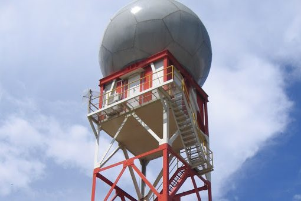
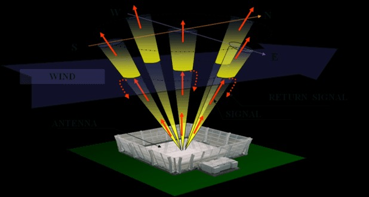
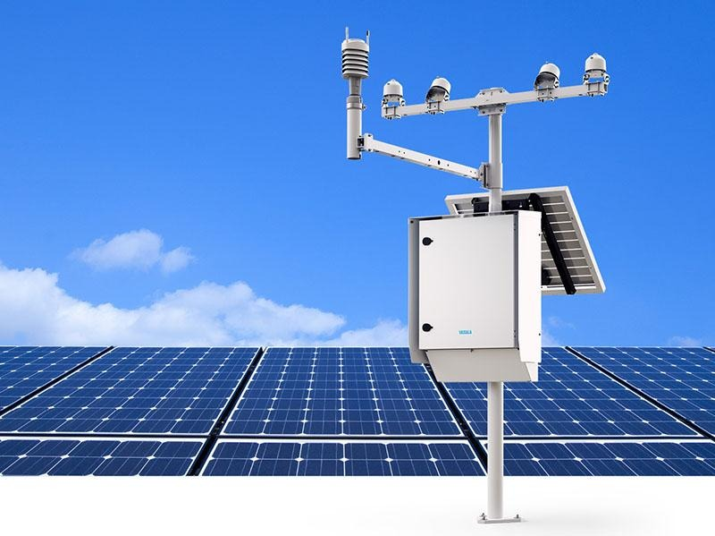

Hmmm kira-kira apa sih meteorologi? meteor kah?🤨🤔
Pengertian Meteorologi 🌤️
Meteorologi adalah cabang ilmu yang mempelajari atmosfer lapisan gas yang menyelimuti bumi beserta seluruh proses fisika, kimia, dan dinamika yang terjadi di dalamnya. Singkatnya, meteorologi adalah ilmu tentang cuaca dan berbagai fenomena atmosfer seperti angin, awan, hujan, badai, suhu udara, dan tekanan yang berubah setiap hari.
Meteorologi membantu menjelaskan kenapa hujan turun, kenapa angin kencang, kenapa terbentuk kabut, hingga kenapa pesawat harus menghindari awan Cumulonimbus. Observasi lapangan, radar, satelit, dan pemodelan numerik menjadi fondasi utama untuk memprediksi kondisi atmosfer.
🔍 Meteorologi Bukan Meteor!
Banyak orang keliru mengira meteorologi mempelajari meteor. Padahal, kata “meteorologi” berasal dari Bahasa Yunani:
- 🌬️ Meteōron : fenomena di udara
- 📚 Logos : ilmu
Jadi meteorologi adalah ilmu tentang fenomena atmosfer, sedangkan meteor dipelajari dalam astronomi.
Ruang Lingkup Meteorologi 🌎
- 🌧️ Presipitasi
Presipitasi mencakup segala bentuk air yang jatuh dari atmosfer ke permukaan bumi, seperti hujan, gerimis, badai, hujan es, dan salju. Proses ini terjadi ketika uap air mengembun menjadi awan, lalu partikel-partikelnya membesar dan jatuh akibat gravitasi. Studi presipitasi mencakup pembentukan awan hujan, proses koalesensi, mekanisme badai, serta pengaruhnya terhadap banjir, siklus air, dan perubahan iklim.
- 🌡️ Suhu Udara
Suhu udara adalah ukuran panas di atmosfer yang dipengaruhi oleh radiasi Matahari, awan, musim, dan kondisi permukaan bumi. Variasi suhu harian terjadi karena perubahan intensitas penyinaran, pendinginan malam, dan perbedaan sifat permukaan. Suhu berperan besar dalam pembentukan awan, potensi kabut, konveksi, hingga analisis stabilitas atmosfer.
- 💨 Angin
Angin merupakan gerakan massa udara dari tekanan tinggi ke rendah dan dipengaruhi oleh rotasi bumi (Coriolis), topografi, serta pemanasan wilayah tertentu. Meteorologi mempelajari angin mulai dari skala kecil seperti angin darat-laut hingga skala besar seperti jetstream dan monsun. Angin menentukan pergerakan badai, gelombang laut, penyebaran polusi, hingga prakiraan cuaca harian.
- ☁️ Awan
Awan terbentuk dari pengembunan uap air menjadi tetesan kecil atau kristal es. Klasifikasi awan seperti cumulus, stratus, dan cirrus menggambarkan kondisi atmosfer tertentu. Meteorologi mempelajari struktur awan, proses pembentukannya, serta kaitannya dengan hujan, badai, dan perubahan cuaca.
- 🌫️ Visibilitas
Visibilitas adalah jarak pandang yang dapat diamati secara horizontal dan dipengaruhi oleh kabut, asap, embun, serta partikel kecil di udara. Kondisi ini sangat penting dalam dunia penerbangan, pelayaran, dan transportasi darat. Meteorolog memantau visibilitas untuk keselamatan dan analisis kondisi lingkungan.
- 📉 Tekanan Udara
Tekanan udara adalah gaya oleh kolom udara yang menekan permukaan bumi. Sistem tekanan tinggi biasanya menghasilkan cuaca cerah, sedangkan tekanan rendah cenderung membawa awan dan hujan. Analisis tekanan udara sangat penting dalam memprediksi pola cuaca serta menentukan arah dan kecepatan angin.
- 🌀 Cuaca Ekstrem
Cuaca ekstrem mencakup badai tropis, hujan lebat, angin kencang, petir, gelombang panas, dan fenomena intens lainnya. Meteorologi mempelajari faktor pembentuknya, seperti ketidakstabilan atmosfer atau suhu laut tinggi, agar dapat memberikan peringatan dini dan mengurangi risiko bencana.
- 🌊 Interaksi Atmosfer – Laut
Laut dan atmosfer saling memengaruhi melalui pertukaran energi, panas, dan uap air. Fenomena besar seperti El Niño, La Niña, dan MJO menjadi pengontrol utama variasi hujan di wilayah tropis. Interaksi ini juga sangat penting dalam terbentuknya siklon tropis dan pola cuaca jangka panjang.
Cabang-Cabang Meteorologi 🧪
- 📡 Meteorologi Dinamik
Meteorologi Dinamik mempelajari atmosfer dengan pendekatan fisika dan matematika yang menjelaskan bagaimana udara bergerak, bagaimana tekanan dan suhu memengaruhi aliran atmosfer, serta bagaimana gelombang atmosfer terbentuk. Cabang ini membahas gaya-gaya yang bekerja pada massa udara seperti gaya gradien tekanan, Coriolis, dan gesekan. Meteorologi dinamik menjadi dasar utama dalam pembuatan model cuaca numerik (Numerical Weather Prediction) dan analisis pola cuaca besar seperti monsun, jetstream, hingga siklon.
- 📈 Meteorologi Sinoptik
Meteorologi Sinoptik berfokus pada analisis dan interpretasi data cuaca skala besar menggunakan peta cuaca, citra satelit, radar, serta pengamatan permukaan. Cabang ini mempelajari posisi front, pusat tekanan, pola angin, dan sistem cuaca global dalam satu waktu tertentu. Analisis sinoptik sangat penting untuk membuat prakiraan cuaca harian, memahami dinamika badai, serta membuat peringatan dini terhadap cuaca ekstrem.
- 🌫️ Meteorologi Fisika
Meteorologi Fisika mempelajari proses-proses fisik yang terjadi di atmosfer, termasuk pembentukan awan, presipitasi, radiasi matahari, energi panas, aerosol, dan interaksi antara partikel atmosfer. Cabang ini juga membahas mikrofisika awan seperti pembentukan tetesan hujan dan kristal es, serta pengaruh radiasi terhadap suhu bumi. Meteorologi fisika sangat penting untuk memahami hujan, badai, kabut, dan perubahan iklim.
- 🛰️ Meteorologi Satelit
Meteorologi Satelit menggunakan data dari satelit cuaca untuk memantau atmosfer dari luar angkasa, termasuk pola awan, suhu permukaan laut, angin, kelembapan, dan pergerakan badai. Cabang ini memungkinkan observasi skala global secara real-time, sehingga sangat penting untuk deteksi dini siklon tropis, pemantauan kebakaran hutan, kualitas udara, hingga analisis pola cuaca harian dan musiman.
- 🌍 Klimatologi
Klimatologi mempelajari pola cuaca dalam jangka panjang (30 tahun atau lebih), termasuk tren suhu, curah hujan, angin, serta variabilitas iklim seperti ENSO, MJO, IOD dan perubahan iklim global. Cabang ini membantu menganalisis musim, pergeseran pola hujan, dampak pemanasan global, serta perencanaan jangka panjang untuk sektor pertanian, sumber daya air, dan mitigasi bencana.
- ✈️ Meteorologi Penerbangan
Meteorologi Penerbangan mempelajari kondisi atmosfer yang mempengaruhi keselamatan dan operasional penerbangan, seperti turbulensi, icing, angin permukaan, jetstream, visibilitas rendah, kabut, serta keberadaan awan cumulonimbus (Cb) yang berbahaya bagi pesawat. Cabang ini menyediakan informasi cuaca untuk bandara, pilot, dan pengatur lalu lintas udara melalui laporan METAR, TAF, SIGMET, dan peringatan cuaca khusus penerbangan.
- 🌊 Hidrometeorologi
Hidrometeorologi mempelajari aspek-aspek siklus hidrologi yang terjadi di atmosfer dan interaksinya dengan permukaan tanah, berfokus pada analisis dan prediksi curah hujan, evaporasi, limpasan permukaan, serta peristiwa cuaca ekstrem berbasis air seperti banjir dan kekeringan, yang sangat krusial untuk manajemen sumber daya air dan mitigasi bencana.
- 🚜 Meteorologi Pertanian (Agrometeorology)
Agrometeorologi mengkaji secara spesifik hubungan dan dampak elemen-elemen atmosfer seperti suhu, kelembapan, radiasi matahari, dan presipitasi terhadap sektor pertanian, termasuk pertumbuhan dan hasil tanaman, kesehatan ternak, serta dinamika hama, guna memberikan informasi dan saran yang tepat waktu untuk pengambilan keputusan di bidang pertanian, irigasi, dan panen.
- 🏭 Meteorologi Lingkungan
Cabang ini berfokus pada studi mengenai bagaimana kondisi atmosfer mempengaruhi penyebaran dan konsentrasi polutan udara, serta kualitas udara secara keseluruhan, di mana analisis mencakup pemodelan dispersi bahan kimia dan partikulat, serta investigasi dampak pola cuaca (seperti angin dan inversi suhu) terhadap akumulasi polusi di kawasan urban dan industri demi perlindungan kesehatan publik. - 🔬 Meteorologi Skala Mikro
Meteorologi Skala Mikro (Micrometeorology) menyelidiki proses fisik atmosfer pada skala ruang dan waktu yang sangat terbatas, umumnya dalam Lapisan Batas Planet (PBL) atau lapisan udara terdekat dengan permukaan, dengan fokus utama pada mekanisme transfer energi, panas, uap air, dan momentum, serta dinamika turbulensi, yang penting untuk memahami interaksi antara bumi dan atmosfer.
- 🛰️ Meteorologi Radar dan Satelit
Cabang ini mengkhususkan diri pada penggunaan dan interpretasi data yang dikumpulkan melalui teknologi penginderaan jauh, seperti Radar Cuaca Doppler dan berbagai jenis satelit meteorologi (geostasioner dan polar), untuk melakukan observasi berkelanjutan, melacak pergerakan sistem cuaca, mengukur parameter atmosfer, dan memberikan input penting untuk model prakiraan cuaca numerik.
Teknologi dalam Meteorologi Modern ⚙️
-
🛰️ Satelit Cuaca
Satelit cuaca digunakan untuk memantau awan, suhu permukaan laut, badai tropis, serta pola cuaca global. Satelit seperti Himawari-9 dan GOES-16 mampu memberikan citra setiap 10 menit sehingga perubahan cuaca dapat dipantau secara real-time.
-
📡 Radar Cuaca
Radar mengirimkan gelombang mikro untuk mendeteksi intensitas hujan, pergerakan badai, hingga potensi puting beliung. Radar Doppler menjadi alat utama untuk peringatan dini cuaca ekstrem seperti hujan sangat lebat atau badai lokal.
Tower SST - Tower RADAR BMKG untuk Monitoring Cuaca
-
🌬️ LIDAR & SODAR
LIDAR menggunakan laser untuk memetakan aerosol dan profil angin, sedangkan SODAR menggunakan gelombang suara untuk menganalisis turbulensi dan struktur atmosfer bawah. Keduanya penting untuk pemodelan kualitas udara.
SODAR
-
🖥️ Numerical Weather Prediction (NWP)
NWP adalah model komputer yang menghitung evolusi atmosfer menggunakan persamaan fisika dan matematika. Contohnya ECMWF, GFS, WRF. Hampir semua prakiraan cuaca modern bergantung pada teknologi ini.
Video penjelasan model cuaca numerik: Weekly Weather Outlook Eps. 145 - "Sejarah Model Cuaca Numerik"
Sumber video -
🌡️ Automatic Weather Station (AWS)
AWS adalah stasiun cuaca otomatis yang mengukur suhu, tekanan, angin, kelembapan, dan curah hujan setiap beberapa menit. Data AWS sangat penting untuk monitoring cuaca real-time dan sistem peringatan dini.
AWS


Manfaat Meteorologi 🚀
-
✈️ Penerbangan
Meteorologi sangat penting dalam dunia penerbangan karena membantu pilot dan ATC memantau kondisi atmosfer seperti turbulensi, potensi pembentukan awan Cumulonimbus (Cb), wind shear, icing, hingga visibilitas rendah. Informasi cuaca ini menentukan jalur penerbangan, ketinggian yang aman, dan keputusan lepas landas maupun mendarat. Tanpa data meteorologi, keselamatan penerbangan berisiko tinggi.
-
🌾 Pertanian
Petani sangat bergantung pada informasi cuaca untuk menentukan waktu tanam, pemupukan, irigasi, dan panen. Prakiraan hujan, suhu, kelembapan, hingga potensi kekeringan membantu mencegah gagal panen. Pola iklim seperti El Niño–La Niña juga memengaruhi hasil pertanian secara luas, sehingga meteorologi berperan besar dalam ketahanan pangan nasional.
-
🌋 Mitigasi Bencana
Meteorologi membantu memberikan peringatan dini terhadap bencana hidrometeorologi seperti hujan ekstrem, badai tropis, angin kencang, banjir, dan gelombang tinggi. Data satelit, radar, dan AWS memungkinkan deteksi dini sehingga masyarakat dapat melakukan evakuasi lebih cepat dan pemerintah dapat merencanakan langkah penanganan bencana secara efektif.
-
🌊 Pelayaran & Kelautan
Informasi cuaca laut seperti tinggi gelombang, arah angin, arus laut, dan potensi badai sangat penting untuk navigasi kapal. Meteorologi juga membantu menghindari jalur berbahaya seperti badai tropis atau swell besar. Prakiraan cuaca maritim melindungi kapal nelayan hingga kapal kargo internasional.
-
🏙️ Kota & Lingkungan
Meteorologi membantu memantau kualitas udara, memprediksi fenomena Urban Heat Island (UHI), mengukur polusi, dan memperkirakan kabut asap. Informasi ini penting untuk kesehatan publik dan perencanaan kota, seperti penentuan ruang hijau, ventilasi alami, serta mitigasi polusi.
-
⚡ Energi
Industri energi memanfaatkan meteorologi untuk memprediksi potensi angin bagi turbin angin, intensitas cahaya Matahari bagi panel surya, serta curah hujan untuk pembangkit listrik tenaga air. Cuaca menentukan efisiensi dan kapasitas produksi energi terbarukan sehingga sektor energi modern sangat bergantung pada ilmu atmosfer.
Kesimpulan 🌟
Meteorologi merupakan ilmu yang mempelajari atmosfer beserta proses fisika, kimia, dan dinamika yang membentuk cuaca sehari-hari maupun fenomena berskala besar. Mulai dari presipitasi, suhu, angin, awan, tekanan udara, visibilitas, hingga cuaca ekstrem semuanya dijelaskan melalui konsep dan pengamatan meteorologi. Berbagai cabangnya, seperti meteorologi dinamik, sinoptik, fisika, satelit, klimatologi, hingga meteorologi penerbangan, bekerja saling melengkapi untuk memahami atmosfer dari skala mikro hingga global. Perkembangan teknologi seperti satelit cuaca, radar Doppler, LIDAR–SODAR, Automatic Weather Station, serta model prediksi numerik (NWP) menjadikan pemantauan dan prakiraan cuaca semakin cepat, akurat, dan real-time. Informasi ini menjadi fondasi penting bagi berbagai sektor: keselamatan penerbangan, pertanian, mitigasi bencana, pelayaran, perencanaan kota, hingga energi terbarukan. Singkatnya, meteorologi berperan besar dalam menjaga keberlangsungan kehidupan, keamanan, dan aktivitas manusia.
tanpa meteorologi, dunia bergerak tanpa arah karena cuaca adalah navigator kehidupan
Mulai Kuis
Siap menguji pemahamanmu mengenai dasar meteorologi? yukkk uji pemahamanmu di kuis